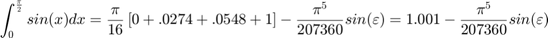
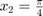
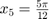
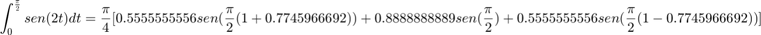
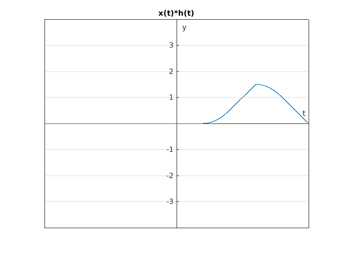

Práctica 4: Convolución y Correlación
integrantes: Gómez García Carlos Eduardo Contreras Porfirio Alejandro Gómez Serrano Eric
Contents
Objetivos
- Conocer métodos básicos de integración numérica
- Manipulación de instrucciones en MATLAB
- Simular convoluciones y correlaciones de señales continuas
Introducción
Teorema fundamental del cálculo
El Teorema fundamental del cálculo dice que la derivada de la integral  de la funcion continua
de la funcion continua  es la propia
es la propia

Segun el Teorema fundamental del calculo se tiene que ver que si la funcion es integrable y el mismo teorema nos dice que toda funcion continua es integrable en un intervalo cualquiera.
Tenemos la funcion  y podemos ver que es integrable. Asi que podemos proceder a integrar en un intervalo de [-2 2].
y podemos ver que es integrable. Asi que podemos proceder a integrar en un intervalo de [-2 2].
Desde el punto de vista geometrico es ver el area que delimita la funcion y construir un polinomio que se parescan o tengan la misma altura para ser equivalente. Propondremos el polinomio
Procedemos a integrar el polinomio
Entonces
Regla del Trapecio
Formulas cerradas de newton-cotes Se trata de aproximar la integral de [a b] de la funcion. Lo que tratan de hacer estas formulas es resolver la integral derivando la funcion un numero determinado de veces y de acuerdo a la Teoria de Lagrande es igual a un polinomio de grado n que es un polinomio que va a considir con la funcion mas un termino de error.
La primer formula de newton-cotes se le conoce como Regla del Trapecio que hace es encontrar un polinimio de grado 1. Al lugar de integrar la funcion esta integrando el polinimio de grado 1.
,
,
,
Entonces aplicando la regla de trapecio nos queda
Regla de Simpson
,
,
,
Aplicamos la regla de simpson
Regla de tres octavos de simpson
,
,
,
Aplicamos la regla de tres octavos de simpson

Regla cerrada del trapecio
![$$ \int_{a}^{b}f(x)dx =\frac{h}{2} [f(a)+2\sum_{i=1}^{n-1}f(x_i)+f(b)]-\frac{b-a}{12}h^2f''(\mu), \space a<\mu<b $$](Practica4_eq17973858749464694453.png)
= numero de subintervalos
Para nuestro ejemplo


Regla compuesta de Simpson
par= numero de subintervalos
Para nuestro ejemplo


Cuadratura Gausseana
Para cuadratura Gausseana utlizamos polinomios de Legendare en vez de los polinomios de Lagrange, este metodo esta definido para integrales definidas en un intervalo de -1 a 1, por lo tanto usamos un cambio de variable para poder usarlo con cualquier funcion
y la aproxiamion de una integral por cuadratura es:
Donde es el coeficiente de Legendare y son las raices del polinomio de Legendare.
Para nuestro ejemplo la integral queda:
con tenemos

PR04 problema 1
t = -10:0.001:10; x = @(t) ((t>=0).*(1-t).*(t<=1)+(t>1).*(t-1).*(t<=2)); h = @(t) heaviside(t)-heaviside(t-1); c = @(t) (t>0).*(t-(t.^2)/2).*(t<=1)+(t>1).*(t.^2-3.*t+5/2).*(t<=2)+(t>2).*(-t.^2/2+2.*t-3/2).*(t<=3); grafica2d(t,x(t),'x(t)'); grafica2d(t,h(t),'h(t)'); grafica2d(t,c(t),'x(t)*h(t)'); %Graficas de las señales involucradas en la convolucion y la grafica de la convolucion

convconm(x,h,c); %llamada de la función que realiza la convolucion
La grafica de color amarrillo es la gráfica del resultado analitco y el punto movil es el resultado de la simulacion
Formula del resultado analitico
PR04 problema 3
x_1 = @(t) (t<=0).*(0)+(t>0).*(t).*(t<=1)+(t>1).*(1).*(t<=2); h_1= @(t) (t<=1).*(0)+(t>1).*(1).*(t<=3)+(t>3).*(0); c_1= @(t) (t>1).*((t.^2)/2-t+1/2).*(t<=2)+(t>2).*((2.*t+1)/2-2).*(t<=3)+(t>3).*((-t.^2+6.*t-8)/2+1).*(t<=4)+(t>4).*(-t+5).*(t<=5); grafica2d(t,x_1(t),'x(t)'); grafica2d(t,h_1(t),'h(t)'); grafica2d(t,c_1(t),'x(t)*h(t)'); % Graficas de las señales involucradas en la convolucion y la grafica de % la convolucion
convconm(x_1,h_1,c_1); %llamada de la función que realiza la convolucion
La grafica de color amarrillo es la gráfica del resultado analitco y el punto movil es el resultado de la simulacion
La formula del resultado analitco
PR06 problema e)
h_2= @(t) heaviside(t)-2*heaviside(t-3)+heaviside(t-4); x_2= @(t) (-4<t).*(-1).*(t<=-3)+(-3<t).*(1).*(t<=0); c_2= @(t) (t>3).*(-4+t).*(t<4)+(t>1).*(2-t).*(t<3)+(t>0).*(-3.*t+4).*(t<1)+(t>-1).*(3.*t+4).*(t<0)+(t>-3).*(t+2).*(t<-1)+(t>-4).*(-4-t).*(t<-3); grafica2d(t,x_2(t),'x(t)'); grafica2d(t,h_2(t),'x(-t)'); grafica2d(t,c_2(t),'x(t)*x(-t)'); % Graficas de las señales involucradas en la autocorrelacion y la grafica % de la autocorrelacion
convconm(x_2,h_2,c_2); %llamada de la función que realiza la convolucion
La grafica de color amarrillo es la gráfica del resultado analitco y el punto movil es el resultado de la simulacion
formula del resultado analitico

PR06 problema f)
h_3 = @(t) heaviside(t)-2.*heaviside(t-2)+heaviside(t-4); x_3= @(t) (-4<t).*(-1).*(t<=-3)+(-3<t).*(1).*(t<=0); c_3= @(t) (-4<t).*(-4-t).*(t<=-3)+(-3<t).*(2+t).*(t<=-2)+(-2<t).*(6+3.*t).*(t<=-1)+(-1<t).*(2-t).*(t<=0)+(0<t).*(-3.*t+2).*(t<=1)+(1<t).*(-t).*(t<=2)+(2<t).*(t-4).*(t<=4); grafica2d(t,x_3(t),'x(t)'); grafica2d(t,h_3(t),'h(t)'); grafica2d(t,c_3(t),'x(t)*h(-t)'); % Graficas de las señales involucradas en la correlacion y la grafica de la % convolucion
convconm(x_3,h_3,c_3); %llamada de la función que realiza la convolucion
La grafica de color amarrillo es la gráfica del resultado analitco y el punto movil es el resultado de la simulacion
formula del resultado analitico
Apendice
codigo de la función convconm
function convconm(x,h,c) % ademas de la funcion x y h recibe como parametro la funcion c que es el resultado analitco de la convolucion z = figure (1); % Se crea una figura para hacer las gráficas axis tight manual % this ensures that getframe() returns a consistent size filename = 'conv.gif'; % nombre que tendrá nuestro archivo .gif dtau = 0.005; % Base de los rectangulos para realizar la integral tau = -5:dtau:8; % Intervalo de visualización del resultado ti = 0; % Indice para el vector de resultados tvec = -5.25:.1:5.75; % traslaciones de t, cuantas integrales se calulan y = NaN*zeros(1, length (tvec)); % Resultados de acuerdo a cuantos t for t = tvec % Cantidad de traslaciones ti = ti+1; % Indice para guardar el resultado (indice del tiempo) xh = x(t-tau).*h(tau); % resultado de la multiplicación lxh = length(xh); % longitud del resultado y(ti) = sum(xh.*dtau); % Base por altura, aproximación de la integral subplot (2,1,1), % gráfica de 2 x 1 (primera) plot(tau, h(tau), 'r-', tau, x(t-tau), 'g--', t, 0, 'ob'); %graficas axis ([tau(1) tau(end) -2.0 2.5]); % límites de los ejes patch([tau(1:end-1); tau(1:end-1); tau(2:end); tau(2:end)],... [zeros(1,lxh-1);xh(1:end-1);xh(2:end);zeros(1,lxh-1)],... [.8 .8 .8], 'edgecolor', 'none'); xlabel('\tau'); % Texto del eje X legend('h(\tau)', 'x(t-\tau)','t','h(\tau)x(t-\tau)')% Caja de Texto subplot (2, 1, 2) % gráfica de 2 x 1 (segunda) plot (tvec, y, 'k', tvec (ti), y(ti), 'ok',tau,c(tau)); % se agrego la funcion c(tau) que corresponde al valor analitico xlabel ('t'); ylabel ('y(t) = \int h(\tau)x(t-\tau) d\tau'); axis ([tau(1) tau(end) -2.0 5.0]); % límites del eje grid; % malla drawnow % efecto de movimiento continuo
frame = getframe(z); % Capture the plot as an image
im = frame2im(frame);
[imind,cm] = rgb2ind(im,256);
% Write to the GIF File
if t == -5.25 % t se debe modificar dependiendo de donde inicia la variable tvec
imwrite(imind,cm,filename,'gif', 'Loopcount',inf);
else
imwrite(imind,cm,filename,'gif','WriteMode','append');
endend end